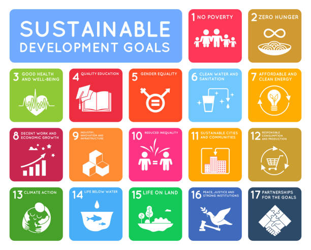

Selamat Datang, di Website Saya! 🌟
Selamat datang di ruang belajar tentang Sustainable Development Goals (SDGs), sebuah agenda bersama untuk menciptakan kehidupan yang lebih baik, adil, dan berkelanjutan bagi seluruh masyarakat dunia.
Website ini merupakan hasil kolaborasi mata pelajaran PPKn, IPS, dan TIK. Melalui website ini, kita akan mengenal 17 tujuan pembangunan berkelanjutan, memahami tantangan yang masih dihadapi, serta melihat bagaimana Indonesia dan negara-negara lain dapat bekerja sama untuk mencapainya.
SDGs bukan hanya urusan pemerintah atau organisasi internasional. Pendidikan, kesehatan, kesetaraan, lingkungan, dan kesejahteraan merupakan hal-hal yang dekat dengan kehidupan sehari-hari. Karena itu, setiap orang memiliki kesempatan untuk ikut berperan.
17 Tujuan, Satu Masa Depan 🌏
Mulai dari menghapus kemiskinan hingga menjaga ekosistem laut dan darat, seluruh tujuan SDGs saling berkaitan. Kemajuan pada satu bidang dapat mendukung bidang lainnya.

Mulai dari Hal yang Ada di Sekitar Kita
Kenali tantangannya
Perhatikan persoalan di lingkungan sekitar, seperti akses pendidikan, kesenjangan kesempatan, sampah, kemiskinan, dan kualitas kesehatan. Masalah lokal dapat berkaitan dengan tujuan global.
Pahami peran bersama
Perubahan membutuhkan kerja sama masyarakat, pemerintah, dunia pendidikan, organisasi, dan negara-negara lain. Tindakan sederhana dapat menjadi bagian dari perubahan yang lebih luas.
Mari mengenal SDGs dan melihat bagaimana kita dapat ikut membangun masa depan yang lebih baik!